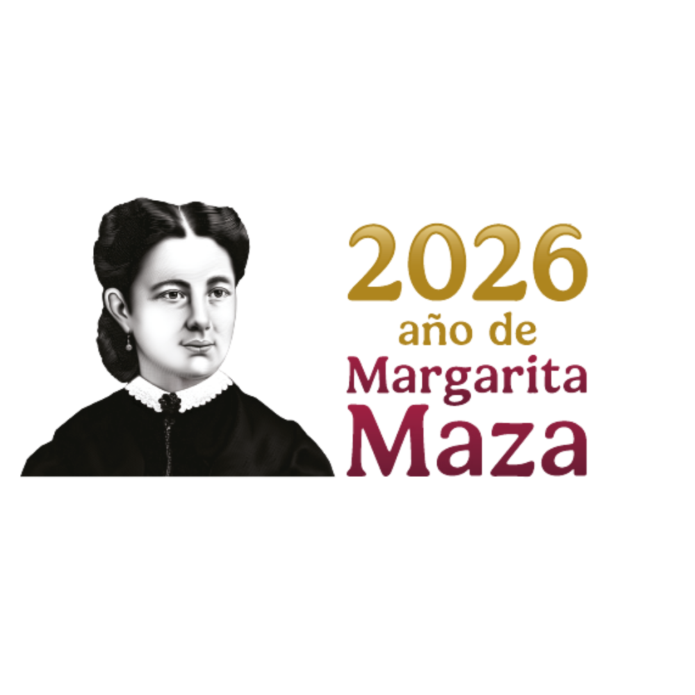
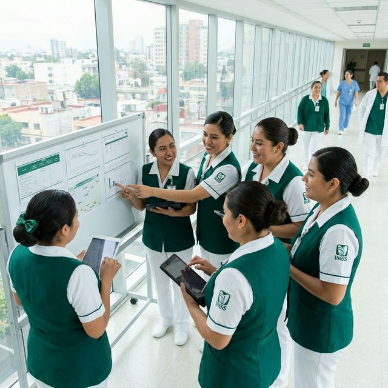
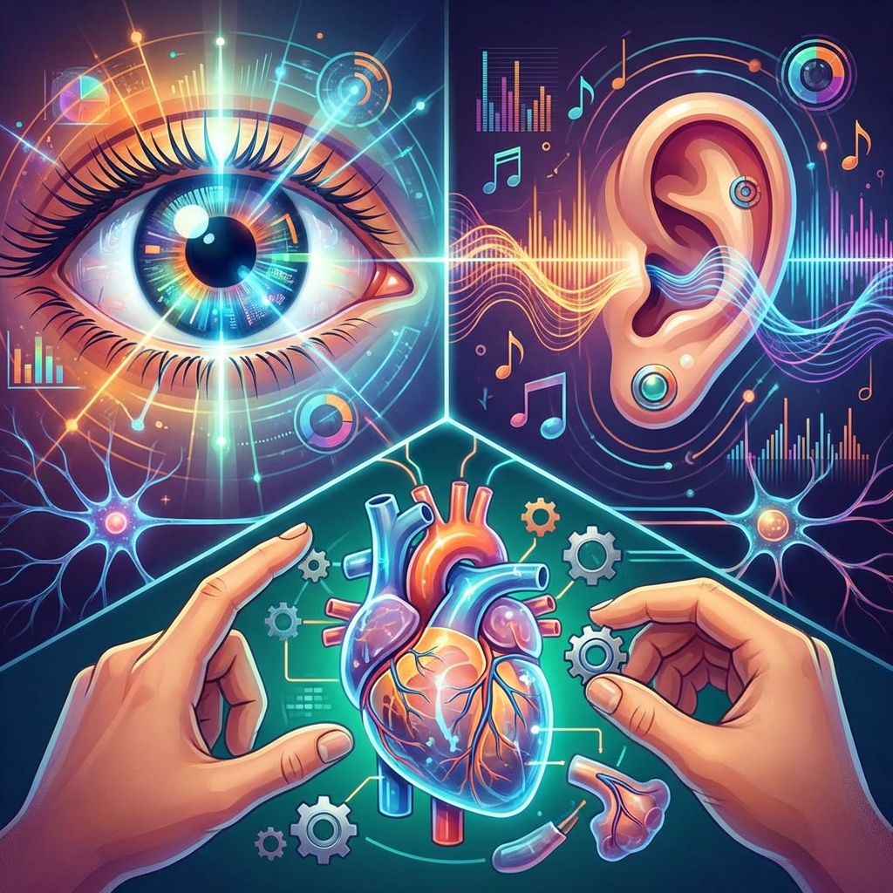

Abordaje Inicial del Paciente Crítico
Perfil del Instructor
Ever Gerardo García Botello
Ing. Sistemas Computacionales (UACJ)
Maestría en Administración de Hospitales (UNID)
Aportando un enfoque multidisciplinario: la precisión de la ingeniería y la estrategia de la administración aplicadas a la educación en cuidados intensivos.
- Optimización de sistemas de aprendizaje.
- Gestión estratégica de recursos educativos.
- Liderazgo en innovación tecnológica hospitalaria.
ENTRENAMIENTOS ESPECIALES:
- Diplomado en administracion de proyectos WISTRON.
- Curso de programación de video juegos en XNA (C#).
- Certificación en fundamentos de ITIL.
Descripción de la Unidad
Naturaleza teórica aplicable a todas las unidades subsecuentes.
- Eje Curricular: Metodológico
- Horas Totales: 16 Horas
- Nivel: I - Novato
Fundamentación Pedagógica
Educación por Competencias
Cognitivo Metacognitivo EmocionalGonzález y Wagenaar (2020) proponen que este enfoque permite al estudiante:
- Adquirir teoría sólida.
- Desarrollar habilidades prácticas.
- Fomentar actitudes ante situaciones reales.
Estrategias Dinámicas
El uso de ABP (Aprendizaje Basado en Problemas) y Aprendizaje Colaborativo:
Tecnología y Entorno
Anderson y Dron (2019) destacan la flexibilidad y acceso a recursos mediante e-learning. Dewey (2017) resalta que el respeto y la confianza entre docente-alumno son la base de la motivación.
Aprender a Conocer en Enfermería

Aprender a Conocer
Concepto: Consiste en adquirir los instrumentos de la comprensión y el dominio del saber mismo (aprender a aprender).
Aprender a Hacer
Concepto: Capacitación para hacer frente a situaciones complejas y trabajar en equipo en contextos laborales variables.
Aprender a Ser
Concepto: Desarrollo pleno de la personalidad, autonomía de juicio y responsabilidad personal en el actuar profesional.
Aprender a Vivir Juntos
Concepto: Fomentar el descubrimiento del otro y la participación en proyectos comunes basados en la comprensión mutua.
1.2 Métodos para Organizar tu Estudio
En el entorno hospitalario, la gestión del tiempo es una competencia crítica. Estos métodos no solo organizan tus tareas, sino que optimizan tu neuroplasticidad y retención de información.
Técnica Pomodoro (Cirillo, 1980)
Concepto: Método de gestión del tiempo que utiliza un temporizador para dividir el trabajo en intervalos enfocados, separados por pausas breves para mantener la agilidad mental.
Basada en la idea de que el cerebro mantiene un enfoque óptimo en bloques cortos. Ayuda a combatir la fatiga mental en guardias largas.
- Sesión de Foco (25 min): Inmersión total en un solo tema (Ej: Farmacodinámica).
- Descanso Táctico (5 min): Desconexión cognitiva para consolidar lo aprendido.
- Ciclo Largo: Tras 4 pomodoros, toma 20-30 min. Esto previene el burnout académico.
Sistema Kanban (Toyota/Anderson)
Concepto: Herramienta visual de gestión de tareas que permite rastrear el progreso de un proyecto dividiéndolo en etapas claras (Por hacer, En proceso, Listo), evitando la sobrecarga cognitiva.
Un método visual para gestionar el flujo de trabajo. Te permite ver el "cuello de botella" de tu aprendizaje.
Temas pendientes
Lectura activa
Autoevaluado
Principio clave: "Deja de empezar y empieza a terminar".
Método Cornell (Walter Pauk): Notas de Alto Rendimiento
Concepto: Formato estructurado de toma de apuntes que divide la hoja en tres secciones clave para organizar el conocimiento, facilitar el repaso y generar síntesis crítica.
No es solo tomar dictado; es un sistema de procesamiento profundo de la información, ideal para Guías de Práctica Clínica.
2. Área de Notas: Durante la clase o lectura, registra ideas principales usando diagramas o abreviaturas.
3. Resumen (Summary): Al final, sintetiza en 3 líneas lo más vital. Si puedes explicarlo simple, lo entendiste.
Hábito de Estudio y Gestión del Tiempo
1.3 La Arquitectura del Hábito
Concepto: Un hábito es un comportamiento automatizado que se repite de forma constante ante una señal específica, permitiendo al cerebro liberar recursos cognitivos para tareas críticas y complejas.
Según Charles Duhigg (2012), un hábito no nace de la voluntad, sino de un Bucle Neurológico:
2. Rutina: La acción de estudiar (20 min de lectura).
3. Recompensa: Sensación de dominio o un pequeño descanso.
La autonomía en enfermería se basa en este bucle: convertir la actualización en un acto reflejo, tan natural como el lavado de manos.
1.4 Gestión del Tiempo Crítico
Concepto: Proceso de planeación y control consciente sobre el tiempo dedicado a actividades específicas, con el fin de maximizar la eficiencia y la calidad de los resultados profesionales.
No se trata de tener más tiempo, sino de gestionar prioridades. Aplicamos la Matriz de Eisenhower al estudio:
| Urgente/Importante | No Urgente/Importante |
|---|---|
| Evaluaciones inmediatas. | Estudio Preventivo (Crecimiento). |
El secreto del éxito en el Postécnico es pasar más tiempo en lo "No Urgente pero Importante".
Disciplina vs Procrastinación
Concepto: La disciplina es el sistema que regula la acción orientada a objetivos a largo plazo, mientras que la procrastinación es el retraso deliberado de tareas importantes a pesar de conocer sus consecuencias negativas.
La motivación es volátil; la disciplina es el sistema que te sostiene cuando el cansancio de la jornada pesa.
- Regla de los 5 Segundos (Mel Robbins): Si tienes un impulso de estudiar, actúa en 5-4-3-2-1 o tu cerebro matará la idea.
- Principio de Pareto (80/20): El 20% de lo que estudias (conceptos clave) generará el 80% de tu éxito clínico.
Tu Entorno y la Ciencia del Aprendizaje Adulto
Ergonomía y Cognición
Concepto: Estudio de la interacción entre el ser humano y los elementos de un sistema, optimizando el bienestar y el rendimiento cerebral mediante el diseño del entorno físico.
Tu lugar de estudio es tu "unidad de cuidados intensivos" personal. Debe estar configurado para el alto rendimiento:
- Iluminación (300-500 lux): Luz fría para mantener el cortisol bajo control y evitar la somnolencia post-guardia.
- Higiene Sonora: Silencio o ruido blanco. Evita música con letra, ya que compite con el bucle fonológico de tu memoria de trabajo.
- Temperatura (21-23°C): Un ambiente muy cálido induce letargo; uno frío distrae el foco hacia la termorregulación.
Minimalismo Digital
Concepto: Filosofía tecnológica enfocada en reducir el ruido digital y las distracciones para centrar los recursos mentales en actividades de alto valor y procesamiento profundo.
Elimina las "notificaciones de alarma" innecesarias. Tu celular debe estar en un plano visual distinto al de tu material de estudio para evitar el costo de cambio de contexto.
Los 5 Supuestos de Knowles
Concepto: La andragogía es la disciplina que se ocupa del aprendizaje de los adultos, reconociendo que poseen una motivación, experiencia y autonomía distintas a las de los niños.
Como adulto en el sistema IMSS, tu aprendizaje se rige por:
- Autoconcepto: Pasas de la dependencia a la dirección autónoma.
- Experiencia: Tu historial en el piso de medicina interna es tu mayor recurso didáctico.
- Prisa por Aprender: Aprendes lo que necesitas para resolver un problema de tu paciente HOY.
Orientación al Problema
Concepto: Enfoque educativo donde el centro del aprendizaje no es el contenido teórico aislado, sino la resolución de situaciones reales y el desarrollo de competencias prácticas.
A diferencia de los niños (centrados en la materia), tú te centras en la competencia. No estudias "Anatomía", estudias cómo esa anatomía explica el choque hipovolémico de tu paciente.
Actividad de Aplicación 1: El Adulto que Aprende
Instrucción: Realizar un breve ensayo reflexivo (máximo 2 cuartillas) sobre cómo tu experiencia previa en el área clínica ha facilitado u obstaculizado el aprendizaje de una nueva técnica o protocolo institucional. Aplica al menos dos supuestos de Knowles en tu análisis.
Entregable: Documento PDF subido a la plataforma.

Tema 2.1Canal de Aprendizaje Visual
2.1.1 Infografía
Concepto: Representación gráfica de datos que simplifica información compleja combinando imágenes y texto concreto.
Detalle: Se utiliza en salas de espera o centrales de enfermería para comunicar protocolos vitales de un vistazo sin lectura pesada.
Cartel de "Los 10 correctos en la enfermería" pegado frente al carrito de medicamentos.
2.1.2 Mapa Mental
Concepto: Diagrama radial que parte de un concepto central y se ramifica con colores e imágenes para activar la memoria asociativa.
Detalle: Excelente técnica para que el cerebro "fotografíe" clasificaciones gigantes en una sola hoja A4.
(NaCl 0.9%)
(H2O Iny)
(Plasma)
2.1.3 Diagramas
Concepto: Representación estructurada de flujos de trabajo, algoritmos o pasos secuenciales para la toma de decisiones.
Detalle: Evita errores cognitivos bajo estrés extremo dictando acciones exactas según la respuesta del paciente.
Desfibrilable?
2.1.4 Línea del Tiempo
Concepto: Representación gráfica de eventos ordenados cronológicamente sobre un eje temporal.
Detalle: Esencial para comprender evoluciones históricas o tiempos de acción farmacológica (Farmacocinética).
2.1.5 Subrayar
Concepto: Técnica de resaltar visualmente las palabras o sentencias clave de un texto con colores llamativos.
Detalle: Separa el "ruido" de lo "vital". Se recomienda un código de color: Rojo (Crítico), Verde (Acción), Amarillo (Atención).
Paciente con creatinina > 1.5 mg/dl. Iniciar terapia de reemplazo.
2.1.6 Resumen
Concepto: Reducción escrita de un texto extenso a sus ideas principales, respetando la estructura lógica original.
Detalle: Disminuye el documento a un 20% de su tamaño original, ideal para repasos de 5 minutos antes de un examen.
Transformar 10 páginas sobre la "Fisiología Pulmonar" en un párrafo de 5 renglones sobre el intercambio gaseoso Alveolar-Capilar.
Tipos de Lectura y Ensayo
2.1.7 Tipos de Lectura
2.1.7.1
Crítica: Analizar la validez y sesgo del texto.
Detalle:
Fundamental para la Enfermería Basada en Evidencia (EBE).
Ejemplo: Cuestionar si
un
estudio patrocinado por una farmacéutica tiene sesgo de resultados.
2.1.7.2
Comprensión: Absorber el significado literal o técnico.
Detalle:
Requiere
alto enfoque; no se opina, se asimila el proceso dictado.
Ejemplo: Entender
perfectamente las instrucciones de dilución de una ampolleta de Noradrenalina de
la
GPC.
2.1.8 Ensayo Académico
Concepto: Texto en prosa donde el autor defiende una postura personal sustentada sobre un tema clínico.
Detalle: Desarrolla el pensamiento crítico profesional, estructurando ideas en Introducción, Desarrollo (argumentos) y Conclusión.
Ejercicio Práctico: Canal Visual (30 min)
Objetivo: Aplicar herramientas visuales para sintetizar un proceso clínico estándar.
Instrucciones:
1. Elijan un protocolo breve (ej. Colocación de Sonda Foley o Toma de EKG).
2. Diseñen en una hoja (o tablero) un Diagrama de Flujo o un
Mapa Mental con los pasos críticos y puntos de decisión.
3. Utilicen al menos 3 colores distintos para resaltar: Materiales, Acciones, y
Precauciones.
Entregable: Presentar el diagrama al resto de la clase explicando por qué eligieron esa estructura visual.
Canal de Aprendizaje Auditivo
2.2.1 Lectura en Voz Alta
Concepto: Proceso de vocalizar un texto mientras se lee para activar el bucle fonológico, permitiendo que el cerebro reciba el estímulo por dos vías (visual y auditiva).
Detalle: Reduce la fatiga mental y evita la "lectura pasiva" garantizando atención plena en temas densos (ej. Legislación en salud).
2.2.2 Grabación de Voz
Concepto: Captura de información oral (clases, resúmenes propios) para ser escuchada repetidamente en diferentes contextos.
Detalle: Permite el "aprendizaje pasivo" durante tiempos muertos (conduciendo, haciendo ejercicio, en el transporte público).
2.2.3 Debate
Concepto: Intercambio argumentativo formal entre dos posturas respecto a un tema o procedimiento controversial.
Detalle: Fomenta la argumentación clínica rápida; exige buscar evidencia sólida para defender el punto.
2.2.4 Metáforas
Concepto: Figura retórica que compara dos cosas diferentes pero que comparten una característica fundamental para explicar un concepto abstracto.
Detalle: Es la mejor herramienta para educar a pacientes geriátricos o pediátricos que no comprenden terminología médica.
Ejemplo "Falla Cardíaca":
"Imagina que tu corazón es como una bomba de agua vieja. Sigue latiendo
(bombeando), pero ya no tiene la fuerza suficiente para mandar el agua hasta el
último piso del edificio, por lo que el agua se estanca (edema)."
2.2.5 Nemotecnias
Concepto: Técnica de asociación mental (letras, palabras, frases pegadizas) para recordar listas o secuencias complejas de forma invulnerable al estrés.
Detalle: El cerebro humano olvida el 50% de la información "cruda" en una hora, pero retiene acrónimos casi indefinidamente.
Acrónimo: V.O.M.I.T.
Cuidados iniciales universales para pacientes en sala de urgencias que llegan en estado crítico.
- V
- Vitales: Monitorización continua de Signos Vitales.
- O
- Oxígeno: Garantizar vía aérea y oxigenoterapia.
- M
- Monitor EKG: Trazado electrocardiográfico inicial.
- I
- IV (Intravenoso): Colocar acceso venoso periférico permeable.
- T
Ejercicio Práctico: Canal Auditivo (30 min)
Objetivo: Emplear la verbalización y el debate para consolidar conocimiento farmacológico.
Instrucciones:
1. Formen parejas. Un compañero será el "Facilitador" y el otro el "Estudiante".
2. El Facilitador explicará en voz alta el mecanismo de acción de un
medicamento común en piso (ej. Omeprazol o Ketorolaco) usando una Metáfora
creativa.
3. El Estudiante pondrá a prueba la metáfora debatiendo un escenario
clínico rápido (ej. "¿Qué pasa si se lo doy a alguien con sangrado?").
Entregable: Compartir la mejor metáfora creada con el resto del grupo.
Canal Kinestésico y Social
2.3.1 y 2.3.2 Sociodrama y Roles
Concepto: Metodología activa donde los participantes asumen papeles específicos para representar una situación clínica realística en un ambiente seguro.
Detalle: Desarrolla la "memoria muscular" de protocolos y entrena el control emocional (liderazgo, comunicación en asa cerrada).
Teoría
Código Trauma
Retroalimentación
Ejemplo: Tú eres el líder de vía aérea, yo seré el líder de medicamentos.
2.3.3 Gimnasia Cerebral
Concepto: Breves rutinas de movimientos corporales coordinados que "despiertan" el cerebro al cruzar la línea media del cuerpo, estimulando ambos hemisferios.
Detalle: Reduce los niveles de cortisol y mejora el enfoque atencional en guardias nocturnas prolongadas.
Tocarse la rodilla izquierda con el codo derecho y viceversa ("Gateo cruzado") durante 60 segundos antes del pase de visita.
2.3.4 Lluvia de Ideas
Concepto: Técnica grupal donde se propone emitir la mayor cantidad de opciones sin censura ni juicio para resolver un problema.
Detalle: Fomenta la recolección masiva de variables buscando innovación. Se anota TODO en un pizarrón.
Problema: "Aumento de UPP en
Terapia Intensiva."
(Notas adhesivas virtuales)
👉 Uso de colchones de presión alterna
👉 Rotación estricta cada 2 hrs
👉 Uso de ácidos grasos hiperoxigenados
2.3.5 Confrontación
Concepto: Exposición constructiva de contradicciones o fallas atípicas en un proceso frente a la persona, guiada por el respeto.
Detalle: No es un conflicto negativo; es una corrección directa al momento para evitar complicaciones perjudiciales para el paciente.
2.3.6 Discusión Guiada
Concepto: Diálogo estructurado entre un grupo de estudiantes, dirigido por un facilitador experto que modera el flujo mediante preguntas abiertas.
Detalle: El maestro no impone el conocimiento; extrae el conocimiento analítico de los alumnos guiando el caso clínico paso a paso.
"Bien equipo, tenemos un paciente masculino en su 2do día post-operatorio de apendicectomía que enfermería priorizarían?"
Ejercicio Práctico: Canal Kinestésico (15 min)
Objetivo: Experimentar cómo el movimiento físico mejora la atención y rompe la fatiga mental.
Instrucciones:
1. Pónganse de pie. Todo el grupo realizará una sesión rápida de Gimnasia
Cerebral.
2. Reto Motor: Con la mano derecha dibujen un círculo en el aire hacia
adelante de forma continua. Al mismo tiempo, con la mano izquierda, dibujen un cuadrado en el
aire.
3. Intenten mantener ambos movimientos por 30 segundos sin detenerse y luego cambien de
mano.
Entregable: Compartir en voz alta (Lluvia de ideas rápida) en qué momento sintieron mayor dificultad y cómo se sintió su nivel de alerta después del ejercicio.
Metodologías de Procesamiento
3.1 Método PQRST (Thomas y Robinson)
Concepto: Técnica de estudio autogestionada diseñada para mejorar la comprensión lectora y la retención de información mediante un proceso de cinco pasos.
Detalle: Ideal para abordar capítulos extensos de libros médicos o GPC (Guías de Práctica Clínica).
- P (Preview): Inspección rápida de títulos y gráficos.
- Q (Question): Transformar títulos en preguntas guía.
- R (Read): Lectura activa para responder las preguntas.
- S (State): Auto-explicación de lo leído en voz alta.
- T (Test): Autoevaluación final sin consultar el texto.
Usar PQRST para estudiar un manual de "Ventilación Mecánica"; primero miras las gráficas (P) y te preguntas cómo afecta el PEEP (Q).
3.2 Cuadro PNI (Edward de Bono)
Concepto: Estrategia de pensamiento crítico que obliga a valorar una idea o situación desde tres ángulos distintos, evitando juicios precipitados.
Detalle: Fomenta la evaluación objetiva antes de implementar nuevos protocolos en el área de salud.
Realizar un PNI sobre la implementación de un nuevo formato de registros electrónicos de enfermería en el hospital.
3.3 Cuadro S.Q.A.
Concepto: Herramienta metacognitiva que vincula los conocimientos previos con los nuevos objetivos de aprendizaje, cerrando el proceso con una reflexión de lo asimilado.
Detalle: Ideal para el inicio de cada rotación clínica para enfocar el esfuerzo de estudio y autoevaluar el progreso final.
| S (Sé) - Conocimientos Previos | Q (Quiero) - Objetivos | A (Aprendí) - Logros |
|---|---|---|
| "Sé que el potasio alto es peligroso y causa arritmias..." | "Quiero saber cómo tratar la hiperkalemia de urgencia..." | "Aprendí el protocolo de Solución Polarizante y Gluconato de Calcio..." |
Organizadores de Información
3.4 Cuadros Sinópticos y Comparativos
Concepto (Sinóptico): Resumen esquemático lógico jerárquico que utiliza "llaves" ({) para organizar ideas de lo general a lo particular.
Concepto (Comparativo): Matriz de doble entrada que permite identificar múltiples variables (semejanzas y diferencias) entre dos o más elementos de estudio.
Detalle: Son excelentes para estudiar farmacología (comparando medicamentos de una misma familia).
Crear un Cuadro Comparativo entre "Choque Hipovolémico" y "Choque Cardiogénico" (contrastando Fisiopatología, PVC, y Tratamiento de Primera Línea).
3.5 Mapas Conceptuales
Concepto: Creado por Joseph Novak. Es una red de conceptos interconectados mediante "palabras de enlace" que expresan relaciones complejas.
Detalle: A diferencia de un mapa mental (radial y visual), el mapa conceptual es estrictamente jerárquico (arriba hacia abajo) y se lee como oraciones estructuradas ("A / produce / B").
Ejercicio Práctico: Mapas de Conocimiento (15 min)
Objetivo: Estructurar un proceso patológico de forma lógica y jerárquica.
Instrucciones:
1. Elijan una patología común en su área (ej. Diabetes Mellitus Tipo 2, HAS, Neumonía).
2. Diseñen un mini Mapa Conceptual usando no más de 8 nodos principales.
3. Recuerden agregar siempre las palabras de enlace sobre las líneas (ej.
"provoca", "se trata con", "afecta").
Entregable: Intercambiar el mapa con otro equipo para que valoren si el diagrama "se lee" por sí mismo sin explicaciones adicionales.
TIC: Tecnologías de la Información y Comunicación
4.1.1 y 4.1.2 Concepto y Dispositivos
Concepto (Definición): Conjunto de recursos, herramientas, equipos y programas que procesan, administran y comparten información tecnológica.
Detalle (Computadoras y dispositivos móviles): Son el Hardware esencial. Desde la estación de enfermería hasta el smartphone personal, habilitan el acceso al saber universal en el punto de atención.
Utilizar una tableta en piso para mostrar al paciente un video infográfico sobre el cuidado de su catéter.
4.1.3 y 4.1.4 Internet y Comunicación
Concepto (Internet): La red global que interconecta el conocimiento médico; la "carretera" de la información.
Detalle (Correo y mensajería): Herramientas asíncronas (email corporativo IMSS) y síncronas (WhatsApp, Telegram) imprescindibles para la gestión hospitalaria y académica.
Recibir indicaciones de la jefatura vía correo institucional y coordinar los enlaces de turno urgentes a través de un grupo de mensajería seguro.
4.1.5 Servicios en la nube
Concepto: Almacenamiento y gestión de datos en servidores externos accesibles vía internet (Google Drive, OneDrive, iCloud).
Detalle: Rompe la dependencia de un solo dispositivo físico (USB), evitando la pérdida de protocolos, tareas del postécnico o material didáctico por daño o extravío del equipo.
Crear una carpeta compartida en la nube con tu equipo de guardia donde todos suben las Guías de Práctica Clínica (GPC) más recientes, accesibles a un clic desde sus celulares.
TAC: Tecnologías de Aprendizaje y Conocimiento
4.2.2 y 4.2.10 Realidad y Simulación
Concepto (Realidad AR/VR y Simuladores): Entornos digitales inmersivos que recrean escenarios clínicos reales para la práctica segura sin riesgo para el paciente real.
Detalle: Laboratorios virtuales y maniquíes de alta fidelidad que permiten el entrenamiento de la "memoria muscular" anatómica y procedimental.
Usar gafas de VR o una app de Realidad Aumentada para visualizar y desglosar el sistema circulatorio del brazo antes de una práctica real de punción venosa en el laboratorio.
4.2.3, 4.2.4 y 4.2.6 Gamificación y Multimedia
Concepto: Uso de mecánicas de juego (puntos, retos) e interactividad (videos, infografías animadas) para aumentar la motivación y retención de información pequeña y digerible (Microcontenidos).
Detalle: Quita el "estrés funcional" de los exámenes tradicionales, fomentando una autoevaluación lúdica.
Generar un quiz rápido en Kahoot! o Mentimeter al final del pase de guardia para repasar las "Metas Internacionales de Seguridad del Paciente" compitiendo sanamente.
4.2.5 Colaboración y Códigos QR
Concepto: Herramientas para la creación conjunta de contenido. Los Códigos QR (4.2.5.1) fungen como puentes instantáneos entre el mundo físico (un papel) y el digital (un protocolo visual).
Detalle: Vital para estandarizar procesos en servicios de alta rotación de personal (UCI, Urgencias).
Pegar un Código QR impreso en los carros rojos del hospital que, al escanearse con el celular, abra un video-tutorial exacto sobre la ubicación y dosis de cada medicamento del cajón.
4.2.7, 4.2.8 y 4.2.9 IA y Plataformas (LMS)
Concepto: Aplicación de algoritmos inteligentes (IA) y sistemas de gestión del aprendizaje (Moodle, Classroom) para personalizar la evaluación continua en línea.
Detalle: Permiten programar exámenes aleatorios, dar feedback automático y concentrar las calificaciones de grandes grupos de alumnos.
Subir una rúbrica a Google Classroom evaluada automáticamente mediante formularios que tabulan estadísticamente qué tema requiere repaso urgente.
TEP: Empoderamiento y Participación
4.3.1 Ambientes Virtuales de Aprendizaje (AVA)
Concepto: Espacios digitales diseñados con fines educativos donde convergen estudiantes y tutores rompiendo la barrera de tiempo y espacio.
- 4.3.1.1 E-learning: Aprendizaje 100% electrónico (virtual).
- 4.3.1.2 B-learning: Blended learning (híbrido/mixto).
- 4.3.1.3 M-learning: Mobile learning (aprendizaje desde el celular en tiempos muertos).
Tomar el curso Postécnico en modelo B-learning: prácticas clínicas presenciales combinadas con revisión de teoría en Moodle desde casa.
4.3.2 y 4.3.3 Redes Sociales y Video
Concepto: Uso de plataformas de consumo masivo para la divulgación científica y la creación de redes profesionales de apoyo.
Detalle: Incluye redes como X (Twitter), Facebook, Instagram y plataformas audiovisuales como YouTube y Vimeo.
Seguir cuentas académicas de cardiología en X para enterarse de la publicación de nuevas guías, o buscar la técnica exacta de colocación de un CVC en YouTube.
4.3.4 Blogs y Wikis
Concepto: Sitios web de formato bitácora o enciclopedia colaborativa que permiten la construcción social del conocimiento.
Detalle: Plataformas como WordPress, Blogger y la misma Wikipedia. Ideal para reflexionar públicamente sobre casos clínicos (salvaguardando la identidad del paciente).
Escribir una entrada reflexiva semanal en un blog personal (WordPress) sobre las lecciones éticas aprendidas durante la rotación en Terapia Intensiva.
4.3.5 y 4.3.6 Colaboración y MOOCs
Concepto: Cursos Online Masivos y Abiertos (MOOCs) y las herramientas síncronas que habilitan el trabajo a distancia.
Detalle: Microsoft Teams o Google Docs para editar un protocolo al mismo tiempo desde distintos hospitales, y plataformas como Coursera o edX para actualizarse gratuitamente.
Abrir un Google Doc compartido con tu equipo para redactar simultáneamente la tesina final, viendo los cambios de tus compañeros en tiempo real.
Actividad de Aplicación 4: Investigación y Rigor APA (30 min)
Objetivo: Buscar información confiable y dar el crédito correspondiente utilizando la normativa estándar.
Instrucción:
1. Realizar una búsqueda bibliográfica rápida (en PubMed, Scielo o Google Académico) sobre
un avance tecnológico en su área de enfermería.
2. Redactar un resumen de 3 párrafos en un Google Doc compartido (usando así una herramienta
de colaboración).
3. Incluir obligatoriamente al menos 2 citas textuales y la
bibliografía completa en formato APA 7ma Edición.
Entregable: Enviar el enlace del Google Doc al facilitador.
Criterios de Evaluación
Esquema de Calificación
| Actividad | Peso |
|---|---|
| Examen Parcial | 30% |
| Exposición | 30% |
| Tareas Individuales | 40% |
Requisitos Reglamentarios
Asistencia: Mínimo 80% (Máximo 20% inasistencias).
Entrega: Organizadores visuales, Prototipos, Vídeo Educativo.